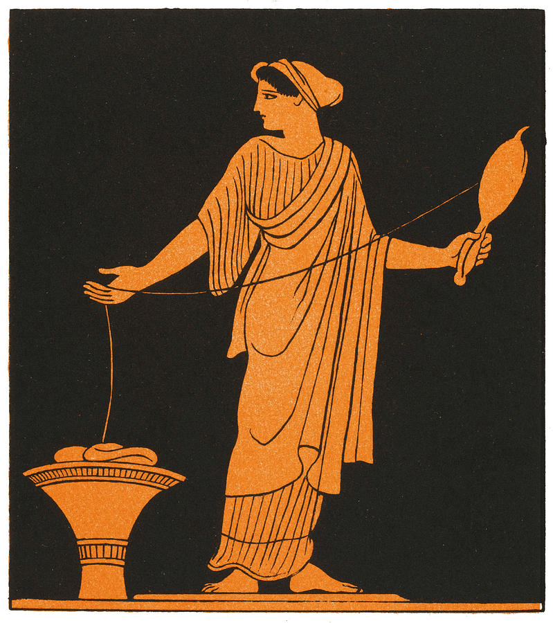

Mit dem Gott des Weines, der Freude, der Trauben, der Fruchtbarkeit, des Wahnsinns und der Ekstase wird jede Party ein Erfolg.
Dionysos bietet unser Essen und Trinken an. Er feiert all eure Erfolge mit und ist ein sehr engagirter Zurufer
Sie ist weder Gott noch Halbgott. Aber sie hat es als einfacher Mensch und trotz aller Schwierigkeiten geschafft, für uns eine Website aufzugspinnen und darauf feiern wir sie als Heldin.
Für diese Aufgabe hat sie nicht nur ihr Wissen aus dem Unterricht GPT2 und „dem Internet“ verwendet. Nein, sie hat selber auf Farbe und Pinsel zurückgegriffen, um diesen hübschen Hintergrund zu gestalten.
3021559
